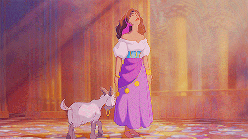
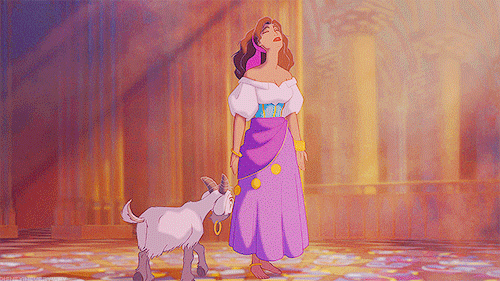

L'orgie devenait de plus en plus flamande. Teniers n'en donnerait qu'une bien imparfaite idée. Qu'on se figure en bacchanale la bataille de Salvator Rosa. Il n'y avait plus ni écoliers, ni ambassadeurs, ni bourgeois, ni hommes, ni femmes ; plus de Clopin Trouillefou, de Gilles Lecornu, de Marie Quatrelivres, de Robin Poussepain. Tout s'effaçait dans la licence commune. La grand'salle n'était plus qu'une vaste fournaise d'effronterie et de jovialité où chaque bouche était un cri, chaque oeil un éclair, chaque face une grimace, chaque individu une posture. Le tout criait et hurlait. Les visages étranges qui venaient tour à tour grincer des dents à la rosace étaient comme autant de brandons jetés dans le brasier. Et de toute cette foule effervescente s'échappait, comme la vapeur de la fournaise, une rumeur aigre, aiguë, acérée, sifflante comme les ailes d'un moucheron.